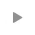

Number 1 Türk Damar Dinle

Radyo Dinle Canlı
Popüler Arabesk Radyo Dinle
1
Damar Türk Fm
2
Baba Radyo
3
Müslüm Fm
4
Kral FM
5
Melankolik Home
İstanbul Radyoları Dinle
1
Best FM
2
Slowtürk
3
Damar Türk Fm
4
Baba Radyo
5
Akustik Türküler
Rastgele Radyo Dinle
1
Afyon Radyo Tek
2
Power R&B HipHop
3
Radyo 7
4
İzmir Can Radyo
5
Radyo Türkiyem